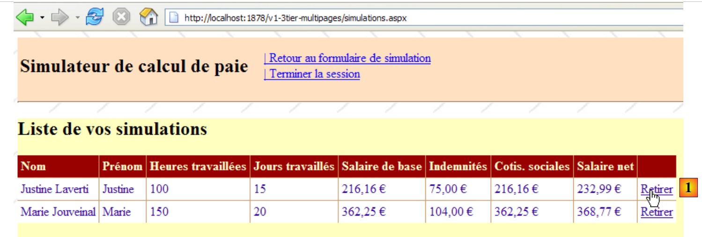
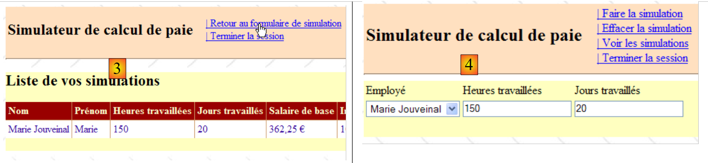

11. A aplicação [SimuPaie] – versão 7 – ASP.NET / multi-vista / multi-página
Leitura recomendada: referência [1], Desenvolvimento Web com ASP.NET 1.1, secção: Exemplos
Estamos agora a analisar uma versão que é funcionalmente idêntica à aplicação ASP.NET de três camadas [pam-v4-3tier-nhibernate-multivues-monopage] discutida anteriormente, mas estamos a modificar a sua arquitetura da seguinte forma: enquanto na versão anterior as vistas eram implementadas por uma única página ASPX, aqui serão implementadas por três páginas ASPX.
A arquitetura da aplicação anterior era a seguinte:
 |
Aqui temos uma arquitetura MVC (Modelo–Visão–Controlador):
- [Default.aspx.cs] contém o código do controlador. A página [Default.aspx] é o único ponto de contacto do cliente. Ela trata de todos os pedidos do cliente.
- [Saisies, Simulation, Simulations, ...] são as vistas. Estas vistas são implementadas aqui utilizando componentes [View] na página [Default.aspx].
A arquitetura da nova versão será a seguinte:
 |
- apenas a camada [web] muda
- as vistas (o que é apresentado ao utilizador) permanecem inalteradas.
- O código do controlador, que na versão anterior estava inteiramente em [Default.aspx.cs], está agora distribuído por várias páginas:
- [MasterPage.master]: uma página que encapsula elementos comuns às diferentes visualizações: o banner superior com as suas opções de menu
- [Formulaire.aspx]: a página que apresenta o formulário de simulação e gere as ações que ocorrem neste formulário
- [Simulations.aspx]: a página que apresenta a lista de simulações e gere as ações que ocorrem nesta página
- [Errors.aspx]: a página apresentada quando ocorre um erro de inicialização da aplicação. Não são possíveis quaisquer ações nesta página.
Isto pode ser considerado uma arquitetura MVC com vários controladores, enquanto a arquitetura da versão anterior era uma arquitetura MVC com um único controlador.
O processamento de um pedido do cliente segue estes passos:
- O cliente faz uma solicitação à aplicação. A solicitação é direcionada para uma das duas páginas [Formulaire.aspx, Simulations.aspx].
- A página solicitada processa esta solicitação. Para tal, pode necessitar da assistência da camada [business], que por sua vez pode necessitar da camada [DAO] caso seja necessário trocar dados com a base de dados. A aplicação recebe uma resposta da camada [business].
- Com base nessa resposta, seleciona (3) a vista (= a resposta) a enviar ao cliente, fornecendo-lhe (4) as informações (o modelo) de que necessita.
- A resposta é enviada ao cliente (5)
11.1. As vistas da aplicação
As diferentes visualizações apresentadas ao utilizador são as seguintes:
- - a vista [VueSaisies], que exibe o formulário de simulação

- - a vista [VueSimulation], utilizada para apresentar os resultados detalhados da simulação:

- - a vista [SimulationView], que lista as simulações realizadas pelo cliente

- - a vista [EmptySimulationsView], que indica que o cliente não tem simulações ou já não tem mais simulações:

- a vista [ErrorView], que indica um erro de inicialização da aplicação:

11.2. Gerar vistas num contexto de controladores múltiplos
Na versão anterior, todas as vistas eram geradas a partir da página única [Default.aspx]. Esta página continha dois componentes [MultiView], e as vistas consistiam numa combinação de um ou dois componentes [View] pertencentes a estes dois componentes [MultiView].
Embora eficaz quando há poucas vistas, esta arquitetura atinge os seus limites assim que o número de componentes que formam as várias vistas se torna elevado: de facto, com cada pedido feito à página única [Default.aspx], todos os seus componentes são instanciados, mesmo que apenas alguns deles sejam utilizados para gerar a resposta ao utilizador. É assim realizado trabalho desnecessário com cada novo pedido, o que se torna um estrangulamento quando o número total de componentes na página é elevado.
Uma solução consiste em distribuir as vistas por diferentes páginas. É isso que estamos a fazer aqui. Vamos examinar dois casos diferentes de geração de vistas:
- a solicitação é feita à página P1, e esta gera a resposta
- a solicitação é feita à página P1, e esta página pede à página P2 para gerar a resposta
11.2.1. Caso 1: uma página controlador/visualização
No Caso 1, voltamos à arquitetura de controlador único da versão anterior, em que a página [Default.aspx] é a página P1:
 |
- o cliente faz uma solicitação à página P1 (1)
- A página P1 processa esta solicitação. Para tal, pode necessitar da assistência da camada [business] (2), que por sua vez pode necessitar da camada [DAO] caso seja necessário trocar dados com a base de dados. A aplicação recebe uma resposta da camada [business].
- Com base nessa resposta, seleciona (3) a vista (= a resposta) a enviar ao cliente, fornecendo-lhe (4) as informações (o modelo) de que necessita. Isto envolve a seleção dos componentes [Panel] ou [View] a apresentar na página P1 e a inicialização dos componentes que estes contêm.
- A resposta é enviada ao cliente (5)
Aqui estão dois exemplos retirados da aplicação em estudo:
[Página Formulaire.aspx]
 |
- em [1]: após solicitar a página [Formulaire.aspx], o utilizador solicita uma simulação
- em [2]: a página [Formulaire.aspx] processou este pedido e gerou a resposta exibindo um componente [View] que não tinha sido exibido em [1]
[página Simulations.aspx]
 |
- em [1]: após solicitar a página [Simulations.aspx], o utilizador pretende remover uma simulação
- em [2]: a página [Simulations.aspx] processou este pedido e gerou a resposta, exibindo novamente a nova lista de simulações.
 |
11.2.2. Caso 2: uma página com um único controlador, uma página controlador/visualização
O caso 2 pode abranger várias arquiteturas. Escolheremos a seguinte:
 |
- o cliente faz uma solicitação à página P1 (1)
- A página P1 processa esta solicitação. Para tal, pode necessitar da assistência da camada [business] (2), que por sua vez pode necessitar da camada [DAO] caso seja necessário trocar dados com a base de dados. A aplicação recebe uma resposta da camada [business].
- Com base nisso, seleciona (3) a vista (= a resposta) a enviar ao cliente, fornecendo-lhe (4) as informações (o modelo) de que necessita. Neste caso, a vista a gerar deve ser criada por uma página diferente da P1 — especificamente, a página P2. Para realizar as operações (3) e (4), a página P1 tem duas opções:
- transferir a execução para a página P2 utilizando a operação [Server.Transfer("P2.aspx")]. Neste caso, pode colocar o modelo destinado à página P2 no contexto da solicitação [Context.Items["key"]=value] ou na sessão do utilizador [Session.["key"]=value]. A página P2 será então instanciada e, quando o seu evento Load for processado, por exemplo, poderá recuperar as informações passadas pela página P1 utilizando as operações [value=(Type)Context.Items["key"] ou [value=(Type)Session["key"], conforme apropriado, onde Type é o tipo do valor associado à chave. A transmissão de valores através do Context é mais adequada se não for necessário que os valores do modelo sejam retidos para um futuro pedido do cliente.
- Peça ao cliente para redirecionar para a página P2 utilizando a operação [Response.Redirect("P2.aspx")]. Neste caso, a página P1 colocará o modelo destinado à página P2 na sessão, uma vez que o contexto da solicitação é limpo no final de cada solicitação. No entanto, aqui, o redirecionamento fará com que a primeira solicitação do cliente para P1 termine e acione uma segunda solicitação do mesmo cliente, desta vez para P2. Há duas solicitações sucessivas. Sabemos que a sessão é uma forma de preservar a "memória" entre as solicitações. Existem outras soluções além da sessão.
- Independentemente de como a P2 assume o controlo, voltamos então ao caso 1: a P2 recebeu uma solicitação que irá processar (5) e irá gerar a resposta por si própria (6, 7). Também podemos imaginar que, após processar a solicitação, a página P2 irá passar o controlo para a página P3, e assim por diante.
Eis um exemplo retirado da aplicação em estudo:
 |
- em [1]: o utilizador que solicitou a página [Formulaire.aspx] pede para ver a lista de simulações
- em [2]: a página [Formulaire.aspx] processa este pedido e redireciona o cliente para a página [Simulations.aspx]. É esta última que fornece a resposta ao utilizador. Em vez de pedir ao cliente para redirecionar, a página [Formulaire.aspx] poderia ter encaminhado o pedido do cliente para a página [Simulations.aspx]. Neste caso, em [2], teríamos visto o mesmo URL que em [1]. Na verdade, um navegador exibe sempre o último URL solicitado:
- A ação solicitada em [1] destina-se à página [Formulaire.aspx]. O navegador envia uma solicitação POST para esta página.
- Se a página [Formulaire.aspx] processar a solicitação e, em seguida, a encaminhar via [Server.Transfer("Simulations.aspx")] para a página [Simulations.aspx], permanecemos na mesma solicitação. O navegador exibirá então em [2] a URL de [Formulaire.aspx] para a qual o POST foi enviado.
- Se a página [Formulaire.aspx] processar a solicitação e, em seguida, redirecioná-la via [Response.Redirect("Simulations.aspx")] para a página [Simulations.aspx], o navegador fará então uma segunda solicitação, uma solicitação GET para [Simulations.aspx]. O navegador exibirá então em [2] a URL de [Simulations.aspx] para a qual a solicitação GET foi enviada. É isso que a captura de ecrã [2] acima nos mostra.
11.3. O projeto do Visual Web Developer para a camada [web]
O projeto do Visual Web Developer para a camada [web] é o seguinte:
 |
- Em [1] encontramos:
- o ficheiro de configuração da aplicação [Web.config] – que é idêntico ao da aplicação [pam-v4-3tier-nhibernate-multivues-monopage].
- a página [Default.aspx] – redireciona simplesmente o cliente para a página [Formulaire.aspx]
- a página [Formulaire.aspx], que apresenta o formulário de simulação ao utilizador e gere as ações relacionadas com este formulário
- a página [Simulations.aspx], que apresenta a lista de simulações do utilizador e gere as ações relacionadas com esta página
- A página [Errors.aspx], que apresenta ao utilizador uma página indicando um erro encontrado ao iniciar a aplicação web.
- Em [2], vemos as referências do projeto.
Voltemos à arquitetura do novo projeto:
 |
Em comparação com o projeto [pam-v4-3tier-nhibernate-multivues-monopage], apenas as vistas foram alteradas. É por isso que o novo projeto reutiliza alguns dos ficheiros desse projeto:
- o ficheiro de configuração [Web.config]
- as DLLs referenciadas [pam-dao-nhibernate, pam-metier-dao-nhibernate, Spring.Core, NHibernate]
- a classe de aplicação global [Global.asax]
- as pastas [images, resources, pam]
Para manter a consistência com o projeto atualmente em desenvolvimento, iremos garantir que o namespace para as vistas e a classe de aplicação global é [pam-v7]:
 |
11.4. O código de apresentação da página
11.4.1. A página mestre [MasterPage.master]
As vistas da aplicação apresentadas na Secção 11.1 têm elementos comuns que podem ser agrupados numa Página Mestre, conhecida como Master Page no Visual Studio. Tomemos, por exemplo, as vistas [VueSaisies] e [VueSimulationsVides] abaixo, geradas respetivamente pelas páginas [Formulaire.aspx] e [Simulations.aspx]:
 |
Estas duas vistas partilham o banner superior (Título e Opções de Menu). Isto aplica-se a todas as vistas que serão apresentadas ao utilizador: todas terão o mesmo banner superior. Para permitir que diferentes páginas partilhem o mesmo fragmento de apresentação, existem várias soluções, incluindo as seguintes:
- Colocar este fragmento comum num controlo de utilizador. Esta era a técnica principal no ASP.NET 1.1
- Colocar este fragmento comum numa página mestre. Esta técnica foi introduzida com o ASP.NET 2.0. É esta que estamos a utilizar aqui.
Para criar uma página mestre numa aplicação web, siga estes passos:
- Clique com o botão direito do rato no projeto / Adicionar Novo Item / Página Mestre:
 |
Ao adicionar uma Página Mestre, são adicionados três ficheiros à aplicação web por predefinição:
- [MasterPage.master]: o código de layout da Página Mestre
- [MasterPage.master.cs]: o código de controlo da Página Mestre
- [MasterPage.Master.Designer.cs]: as declarações de componentes para a Página Mestre
O código gerado pelo Visual Studio em [MasterPage.master] é o seguinte:
<%@ Master Language="C#" AutoEventWireup="true" CodeBehind="MasterPage.master.cs" Inherits="pam_v7.MasterPage" %>
<!DOCTYPE html PUBLIC "-//W3C//DTD XHTML 1.0 Transitional//EN" "http://www.w3.org/TR/xhtml1/DTD/xhtml1-transitional.dtd">
<html xmlns="http://www.w3.org/1999/xhtml">
<head runat="server">
<title>Untitled Page</title>
<asp:ContentPlaceHolder id="head" runat="server">
</asp:ContentPlaceHolder>
</head>
<body>
<form id="form1" runat="server">
<div>
<asp:ContentPlaceHolder id="ContentPlaceHolder1" runat="server">
</asp:ContentPlaceHolder>
</div>
</form>
</body>
</html>
- Linha 1: A tag <%@ Master ... %> é utilizada para definir a página como uma página mestre. O código de controlo da página estará no ficheiro especificado pelo atributo CodeBehind, e a página herdará da classe especificada pelo atributo Inherits.
- Linhas 12–18: O formulário da página mestre
- Linhas 14–16: Um contentor vazio que, na nossa aplicação, irá conter uma das páginas [Form.aspx, Simulations.aspx, Errors.aspx]. O cliente recebe sempre a mesma página em resposta — a página mestre — na qual o contentor [ContentPlaceHolder1] receberá um fluxo HTML fornecido por uma das páginas [Form.aspx, Simulations.aspx, Errors.aspx]. Assim, para alterar a aparência das páginas enviadas aos clientes, basta alterar a aparência da página mestre.
- Linhas 8–9: um contentor vazio que permite às páginas «filhas» personalizar o cabeçalho <head>...</head>.
A representação visual (separador Design) deste código-fonte é apresentada em (1) abaixo. Além disso, pode adicionar quantos contentores desejar utilizando o componente [ContentPlaceHolder] (2) da barra de ferramentas [Standard].
 |
O código de controlo gerado pelo Visual Studio em [MasterPage.master.cs] é o seguinte:
using System;
public partial class MasterPage : System.Web.UI.MasterPage
{
protected void Page_Load(object sender, EventArgs e)
{
}
}
- Linha 3: A classe referenciada pelo atributo [Inherits] da diretiva <%@ Master ... %> na página [MasterPage.master] deriva da classe [System.Web.UI.MasterPage]
Acima, vemos a presença do método Page_Load, que trata do evento Load da página mestre. A página mestre conterá outra página no seu interior. Em que ordem ocorrem os eventos Load das duas páginas? Esta é uma regra geral: o evento Load de um componente ocorre antes do seu contentor. Aqui, o evento Load da página incorporada na página mestre ocorrerá, portanto, antes do da própria página mestre.
Para gerar uma página no que utilize a página anterior [MasterPage.master] como sua página mestre, pode proceder da seguinte forma:
 |
- em [1]: clique com o botão direito do rato na página mestre e, em seguida, selecione [Adicionar Página de Conteúdo]
- em [2]: é gerada uma página padrão, neste caso [WebForm1.aspx].
O código de apresentação para [WebForm1.aspx] é o seguinte:
<%@ Page Title="" Language="C#" MasterPageFile="~/MasterPage.Master" AutoEventWireup="true" CodeBehind="WebForm1.aspx.cs" Inherits="pam_v7.WebForm1" %>
<asp:Content ID="Content1" ContentPlaceHolderID="ContentPlaceHolder1" runat="server">
</asp:Content>
- Linha 1: A diretiva Page e os seus atributos
- MasterPageFile: especifica o ficheiro da página mestre para a página descrita pela diretiva. O símbolo ~ indica a pasta do projeto.
- Os outros parâmetros são os padrão para uma página web ASP
- Linhas 2–3: As tags <asp:Content> são ligadas uma a uma às diretivas <asp:ContentPlaceHolder> na página mestre através do atributo ContentPlaceHolderID. Os componentes colocados entre as linhas 2–3 acima serão, em tempo de execução, colocados no contentor ContentPlaceHolder1 na página mestre.
Ao renomear a página [WebForm1.aspx] gerada desta forma, podemos criar as várias páginas utilizando [MasterPage.master] como página mestre.
Para a nossa aplicação [SimuPaie], a aparência visual da página mestre será a seguinte:
 |
N.º | Tipo | Nome | Função |
Painel (rosa acima) | cabeçalho | cabeçalho da página | |
Painel (amarelo acima) | conteúdo | conteúdo da página | |
Botão de ligação | LinkButtonRunSimulation | solicita o cálculo da simulação | |
LinkButton | LinkButtonClearSimulation | limpa o formulário de entrada | |
LinkButton | LinkButtonViewSimulations | exibe a lista de simulações já realizadas | |
LinkButton | LinkButtonSimulationForm | volta ao formulário de entrada | |
LinkButton | LinkButtonSaveSimulation | guarda a simulação atual na lista de simulações | |
LinkButton | LinkButtonEndSession | encerra a sessão atual |
O código-fonte correspondente é o seguinte:
<%@ Master Language="C#" AutoEventWireup="true" CodeBehind="MasterPage.master.cs" Inherits="pam_v7.MasterPage" %>
<!DOCTYPE html PUBLIC "-//W3C//DTD XHTML 1.0 Transitional//EN" "http://www.w3.org/TR/xhtml1/DTD/xhtml1-transitional.dtd">
<html xmlns="http://www.w3.org/1999/xhtml">
<head id="Head1" runat="server">
<title>Application PAM</title>
</head>
<body background="ressources/standard.jpg">
<form id="form1" runat="server">
<asp:ScriptManager ID="ScriptManager1" runat="server" EnablePartialRendering="true" />
<asp:UpdatePanel runat="server" ID="UpdatePanelPam" UpdateMode="Conditional">
<ContentTemplate>
<asp:Panel ID="entete" runat="server" BackColor="#FFE0C0">
<table>
<tr>
<td>
<h2>
Simulateur de calcul de paie</h2>
</td>
<td>
<label>
 </label>
<asp:UpdateProgress ID="UpdateProgress1" runat="server">
<ProgressTemplate>
<img alt="" src="images/indicator.gif" />
<asp:Label ID="Label5" runat="server" BackColor="#FF8000"
EnableViewState="False" Text="Calcul en cours. Patientez ....">
</asp:Label>
</ProgressTemplate>
</asp:UpdateProgress>
</td>
<td>
<asp:LinkButton ID="LinkButtonFaireSimulation" runat="server"
CausesValidation="False">| Faire la simulation<br />
</asp:LinkButton>
<asp:LinkButton ID="LinkButtonEffacerSimulation" runat="server"
CausesValidation="False">| Effacer la simulation<br />
</asp:LinkButton>
<asp:LinkButton ID="LinkButtonVoirSimulations" runat="server"
CausesValidation="False">| Voir les simulations<br />
</asp:LinkButton>
<asp:LinkButton ID="LinkButtonFormulaireSimulation" runat="server"
CausesValidation="False">| Retour au formulaire de simulation<br />
</asp:LinkButton>
<asp:LinkButton ID="LinkButtonEnregistrerSimulation" runat="server"
CausesValidation="False">| Enregistrer la simulation<br />
</asp:LinkButton>
<asp:LinkButton ID="LinkButtonTerminerSession" runat="server"
CausesValidation="False">| Terminer la session<br />
</asp:LinkButton>
</td>
</tr>
</table>
<hr />
</asp:Panel>
<div>
<asp:Panel ID="contenu" runat="server" BackColor="#FFFFC0">
<asp:ContentPlaceHolder ID="ContentPlaceHolder1" runat="server">
</asp:ContentPlaceHolder>
</asp:Panel>
</div>
</ContentTemplate>
</asp:UpdatePanel>
</form>
</body>
</html>
- Linha 1: Repare no nome da classe da página mestre: MasterPage
- Linha 8: Defina uma imagem de fundo para a página.
- Linhas 9–64: o formulário
- Linha 10: O componente ScriptManager necessário para os efeitos Ajax
- Linhas 11–63: o contentor AJAX
- Linhas 12–62: o conteúdo com Ajax
- linhas 13–55: o componente Panel [cabeçalho]
- Linhas 57–60: o componente Panel [conteúdo]
- Linhas 58–59: o componente [ContentPlaceHolder1], que irá conter a página encapsulada [Formulaire.aspx, Simulations.aspx, Erreurs.aspx]
Para construir esta página, podemos inserir no painel [header] o código ASPX da vista [HeaderView] da página [Default.aspx] da versão [pam-v4-3tier-nhibernate-multivues-monopage], descrita na secção 8.5.2.
11.4.2. A página [Formulaire.aspx]
Para gerar esta página, siga o método descrito na secção 11.4.1 e renomeie a página [WebForm1.aspx] gerada para [Form.aspx]. A aparência visual da página [Form.aspx] em construção será a seguinte:
 |
A aparência visual da página [Formulaire.aspx] é composta por dois elementos:
- [1] a página mestre com o seu contentor [ContentPlaceHolder1] (2)
- [2] os componentes colocados no contentor [ContentPlaceHolder1]. Estes são idênticos aos da aplicação anterior.
O código-fonte desta página é o seguinte:
<%@ Page Language="C#" MasterPageFile="~/MasterPage.master" AutoEventWireup="true"
CodeBehind="Formulaire.aspx.cs" Inherits="pam_v7.PageFormulaire" Title="Simulation de calcul de paie : formulaire" %>
<%@ MasterType VirtualPath="~/MasterPage.master" %>
<asp:Content ID="Content1" ContentPlaceHolderID="ContentPlaceHolder1" runat="Server">
<div>
<table>
<tr>
<td>
Employé
</td>
<td>
Heures travaillées
</td>
<td>
Jours travaillés
</td>
<td>
</td>
</tr>
...
</asp:Content>
- Linha 1: A diretiva Page com o seu atributo MasterPageFile
- linha 4: a classe de controlo da página mestre pode expor campos e propriedades públicos. Estes são acessíveis às páginas encapsuladas utilizando a sintaxe Master.[campo] ou Master.[propriedade]. A propriedade Master da página refere-se à página mestre como uma instância do tipo [System.Web.UI.MasterPage]. Portanto, no nosso exemplo, deveríamos escrever (MasterPage)(Master).[campo] ou (MasterPage)(Master).[propriedade]. Esta conversão de tipo pode ser evitada inserindo a diretiva MasterType da linha 4 na página. O atributo VirtualPath desta diretiva especifica o ficheiro da página mestre. O compilador pode então reconhecer os campos públicos, propriedades e métodos expostos pela classe da página mestre, neste caso do tipo [MasterPage].
- Linhas 5–22: o conteúdo a ser inserido no contentor [ContentPlaceHolder1] da página mestre.
Esta página pode ser criada definindo o seu conteúdo (linhas 6–21) como o da vista [VueSaisies] descrita na Secção 8.5.3 e o da vista [VueSimulation] descrita na Secção 8.5.4.
11.4.3. A página [Simulations.aspx]
Para gerar esta página, siga o método descrito na secção 11.4.1 e renomeie a página [WebForm1.aspx] resultante para [Simulations.aspx]. A aparência visual da página [Simulations.aspx] atualmente em construção é a seguinte:
 |
A aparência visual da página [Simulations.aspx] consiste em dois elementos:
- [1] a página mestre com o seu contentor [ContentPlaceHolder1]
- em [2] os componentes colocados no contentor [ContentPlaceHolder1]. Estes são idênticos aos da aplicação anterior.
O código-fonte desta página é o seguinte:
<%@ Page Language="C#" MasterPageFile="~/MasterPage.master" AutoEventWireup="true"
CodeBehind="Simulations.aspx.cs" Inherits="pam_v7.PageSimulations" Title="Pam : liste des simulations" %>
<%@ MasterType VirtualPath="~/MasterPage.master" %>
<asp:Content ID="Content1" ContentPlaceHolderID="ContentPlaceHolder1" runat="Server">
<asp:MultiView ID="MultiView1" runat="server">
<asp:View ID="View1" runat="server">
<h2>
Liste de vos simulations</h2>
<p>
<asp:GridView ID="GridViewSimulations" runat="server" ...>
...
</asp:GridView>
</p>
</asp:View>
<asp:View ID="View2" runat="server">
<h2>
La liste de vos simulations est vide</h2>
</asp:View>
</asp:MultiView><br />
</asp:Content>
Podemos criar esta página definindo o seu conteúdo (linhas 5–21) como o da vista [VueSimulations] descrita na secção 8.5.5 e o da vista [VueSimulationsVides] descrita na secção 8.5.6.
11.4.4. A página [Errors.aspx]
Para gerar esta página, siga o método descrito na secção 11.4.1 e renomeie a página [WebForm1.aspx] resultante para [Errors.aspx]. A aparência visual da página [Errors.aspx] atualmente em construção é a seguinte:
 |
A aparência visual da página [Errors.aspx] consiste em dois elementos:
- [1] a página mestre com o seu contentor [ContentPlaceHolder1]
- [2] os componentes colocados no contentor [ContentPlaceHolder1]. Estes são idênticos aos da aplicação anterior.
O código-fonte desta página é o seguinte:
<%@ Page Language="C#" MasterPageFile="~/MasterPage.master" AutoEventWireup="true"
CodeBehind="Erreurs.aspx.cs" Inherits="pam_v7.PageErreurs" Title="Pam : erreurs" %>
<%@ MasterType VirtualPath="~/MasterPage.master" %>
<asp:Content ID="Content1" ContentPlaceHolderID="ContentPlaceHolder1" Runat="Server">
<h3>Les erreurs suivantes se sont produites au démarrage de l'application</h3>
<ul>
<asp:Repeater id="rptErreurs" runat="server">
<ItemTemplate>
<li>
<%# Container.DataItem %>
</li>
</ItemTemplate>
</asp:Repeater>
</ul>
</asp:Content>
11.5. Código de controlo da página
11.5.1. Visão geral
Voltemos à arquitetura da aplicação:
 |
- [Global] é o objeto [HttpApplication] que inicializa (passo 0) a aplicação. Esta classe é idêntica à da versão anterior.
- O código do controlador, que na versão anterior estava inteiramente em [Default.aspx.cs], está agora distribuído por várias páginas:
- [MasterPage.master]: a página mestre para [Form.aspx, Simulations.aspx, Errors.aspx]. Contém o menu.
- [Formulaire.aspx]: a página que apresenta o formulário de simulação e gere as ações realizadas neste formulário
- [Simulations.aspx]: a página que apresenta a lista de simulações e gere as ações que ocorrem nesta página
- [Errors.aspx]: a página apresentada quando ocorre um erro de inicialização da aplicação. Não são possíveis quaisquer ações nesta página.
O processamento de um pedido do cliente segue estes passos:
- O cliente faz uma solicitação à aplicação. Normalmente, faz-o numa das duas páginas [Form.aspx, Simulations.aspx], mas nada o impede de solicitar a página [Errors.aspx]. Este cenário deve ser tido em conta.
- A página solicitada processa esta solicitação (etapa 1). Para tal, pode necessitar da assistência da camada [business] (etapa 2), que por sua vez pode necessitar da camada [DAO] caso seja necessário trocar dados com a base de dados. A aplicação recebe uma resposta da camada [business].
- Com base nisso, seleciona (passo 3) a vista (= a resposta) a enviar ao cliente e fornece-lhe (passo 4) as informações (o modelo) de que necessita. Vimos três possibilidades para gerar esta resposta:
- a página solicitada (D) é também a página (R) enviada em resposta. A construção do modelo de resposta (R) consiste então em atribuir a determinados componentes da página (D) os valores que devem ter na resposta.
- A página solicitada (D) não é a página (R) enviada em resposta. A página (D) pode então:
- Transferir o fluxo de execução para a página (R) utilizando a instrução Server.Transfer(" R "). O modelo pode então ser colocado no contexto utilizando Context.Items("key")=value ou, menos frequentemente, na sessão utilizando Session.Items("key")=value
- Redirecionar o cliente para a página (R) utilizando a instrução Response.redirect(" R "). O modelo pode então ser colocado na sessão, mas não no contexto.
- A resposta é enviada ao cliente (passo 5)
Cada uma das páginas [MasterPage.master, Form.aspx, Simulations.aspx, Errors.aspx] responderá a um ou mais dos seguintes eventos:
- Init: primeiro evento no ciclo de vida da página
- Load: ocorre quando a página é carregada
- Click: um clique num dos links do menu da página mestre
Processamos as páginas uma a seguir à outra, começando pela página mestre.
11.5.2. Código de controlo para a página [MasterPage.master]
11.5.2.1. Estrutura da classe
O código de controlo da página principal tem o seguinte esqueleto:
using System.Web.UI.WebControls;
namespace pam_v7
{
public partial class MasterPage : System.Web.UI.MasterPage
{
// the menu
public LinkButton OptionFaireSimulation
{
get { return LinkButtonFaireSimulation; }
}
...
// set menu
public void SetMenu(bool boolFaireSimulation, bool boolEnregistrerSimulation, bool boolEffacerSimulation, bool boolFormulaireSimulation, bool boolVoirSimulations, bool boolTerminerSession)
{
....
}
// managing the [End session] option
protected void LinkButtonTerminerSession_Click(object sender, System.EventArgs e)
{
....
}
// init master page
protected void Page_Init(object sender, System.EventArgs e)
{
....
}
}
}
}
- linha 5: a classe é denominada [MasterPage] e deriva da classe do sistema [System.Web.UI.MasterPage].
- linhas 9–14: as 6 opções de menu são expostas como propriedades públicas da classe
- linhas 16–19: o método público SetMenu permite que as páginas [Formulaire.aspx, Simulations.aspx, Erreurs.aspx] definam o menu da página mestre
- linhas 22–25: o procedimento que trata do clique no link [LinkButtonTerminerSession]
- Linhas 28–31: O procedimento que trata do evento Init da página mestre
11.5.2.2. Propriedades públicas da classe
using System.Web.UI.WebControls;
namespace pam_v7
{
public partial class MasterPage : System.Web.UI.MasterPage
{
// the menu
public LinkButton OptionFaireSimulation
{
get { return LinkButtonFaireSimulation; }
}
public LinkButton OptionEffacerSimulation
{
get { return LinkButtonEffacerSimulation; }
}
public LinkButton OptionEnregistrerSimulation
{
get { return LinkButtonEnregistrerSimulation; }
}
public LinkButton OptionVoirSimulations
{
get { return LinkButtonVoirSimulations; }
}
public LinkButton OptionTerminerSession
{
get { return LinkButtonTerminerSession; }
}
public LinkButton OptionFormulaireSimulation
{
get { return LinkButtonFormulaireSimulation; }
}
...
}
}
Para compreender este código, é necessário recordar os componentes que constituem a página mestre:
 |
N.º | Tipo | Nome | Função |
Painel (rosa acima) | cabeçalho | cabeçalho da página | |
Painel (amarelo acima) | conteúdo | conteúdo da página | |
Botão de ligação | LinkButtonExecutarSimulação | Solicitar cálculo da simulação | |
Botão de ligação | LinkButtonLimparSimulação | limpa o formulário de entrada | |
LinkButton | LinkButtonViewSimulations | exibe a lista de simulações já realizadas | |
LinkButton | LinkButtonSimulationForm | volta ao formulário de entrada | |
LinkButton | LinkButtonSaveSimulation | guarda a simulação atual na lista de simulações | |
LinkButton | LinkButtonEndSession | encerra a sessão atual |
Os componentes 1 a 6 não são acessíveis fora da página que os contém. As propriedades nas linhas 9 a 37 destinam-se a torná-los acessíveis a classes externas, neste caso as classes das outras páginas da aplicação.
11.5.2.3. O método SetMenu
O método público SetMenu permite que as páginas [Formulaire.aspx, Simulations.aspx, Erreurs.aspx] definam o menu da página mestre. O seu código é básico:
// fixer le menu
public void SetMenu(bool boolFaireSimulation, bool boolEnregistrerSimulation, bool boolEffacerSimulation, bool boolFormulaireSimulation, bool boolVoirSimulations, bool boolTerminerSession)
{
// on fixe les options de menu
LinkButtonFaireSimulation.Visible = boolFaireSimulation;
LinkButtonEnregistrerSimulation.Visible = boolEnregistrerSimulation;
LinkButtonEffacerSimulation.Visible = boolEffacerSimulation;
LinkButtonVoirSimulations.Visible = boolVoirSimulations;
LinkButtonFormulaireSimulation.Visible = boolFormulaireSimulation;
LinkButtonTerminerSession.Visible = boolTerminerSession;
}
11.5.2.4. Tratamento de eventos na página mestre
A página mestre irá tratar dois eventos:
- o evento Init, que é o primeiro evento no ciclo de vida da página
- o evento Click no link [LinkButtonTerminerSession]
A página mestre possui cinco outros links: [LinkButtonRunSimulation, LinkButtonSaveSimulation, LinkButtonClearSimulation, LinkButtonViewSimulations, LinkButtonSimulationForm]. A título de exemplo, vamos examinar o que precisa ser feito quando o link [LinkButtonRunSimulation] é clicado:
- verificar os dados introduzidos (horas, dias) na página [Form.aspx]
- calcular o salário
- exibir os resultados na página [Form.aspx]
Os passos 1 e 3 requerem acesso aos componentes na página [Form.aspx]. Não é esse o caso. Na verdade, a página mestre não tem conhecimento dos componentes nas páginas que podem ser inseridas no seu contentor [ContentPlaceHolder1]. No nosso exemplo, cabe à página [Formulaire.aspx] tratar o clique no link [LinkButtonFaireSimulation], uma vez que é a página que é apresentada quando este evento ocorre. Como pode ser notificada deste evento?
- Uma vez que o link [LinkButtonFaireSimulation] não faz parte da página [Formulaire.aspx], não podemos escrever o procedimento habitual em [Formulaire.aspx]:
private void LinkButtonFaireSimulation_Click(object sender, System.EventArgs e)
{
...
}
Pode contornar o problema com o seguinte código em [Formulaire.aspx]:
using System.Collections.Generic;
...
namespace pam_v7
{
public partial class Formulaire : System.Web.UI.Page
{
// page loading
protected void Page_Load(object sender, System.EventArgs e)
{
// event manager
Master.OptionFaireSimulation.Click += OptFaireSimulation_Click;
Master.OptionEffacerSimulation.Click += OptEffacerSimulation_Click;
Master.OptionVoirSimulations.Click += OptVoirSimulations_Click;
Master.OptionEnregistrerSimulation.Click += OptEnregistrerSimulation_Click;
...
}
// payroll calculation
private void OptFaireSimulation_Click(object sender, System.EventArgs e)
{
....
}
// delete simulation
private void OptEffacerSimulation_Click(object sender, System.EventArgs e)
{
...
}
protected void OptVoirSimulations_Click(object sender, System.EventArgs e)
{
...
}
protected void OptEnregistrerSimulation_Click(object sender, System.EventArgs e)
{
...
}
}
}
- linhas 12–15: Quando ocorre o evento Load da página [Formulaire.aspx], a classe [MasterPage] da página mestre foi instanciada. As suas propriedades públicas Optionxx estão acessíveis e são do tipo LinkButton, um componente que suporta o evento Click. Associamos os seguintes métodos a estes eventos Click:
- OptFaireSimulation_Click para o evento Click no link LinkButtonFaireSimulation
- OptEffacerSimulation_Click para o evento Click no link LinkButtonEffacerSimulation
- OptVoirSimulations_Click para o evento Click no link LinkButtonVoirSimulations
- OptEnregistrerSimulation_Click para o evento Click no link LinkButtonEnregistrerSimulation
O tratamento dos eventos de clique nos seis links do menu será distribuído da seguinte forma:
- a página [Formulaire.aspx] irá tratar os links [LinkButtonRunSimulation, LinkButtonSaveSimulation, LinkButtonClearSimulation, LinkButtonViewSimulations]
- a página [Simulations.aspx] irá tratar do link [LinkButtonSimulationForm]
- a página mestre [MasterPage.master] irá tratar do link [LinkButtonEndSession]. Para este evento, não é necessário saber qual a página que encapsula.
11.5.2.5. O evento Init da página mestre
As três páginas [Form.aspx, Simulations.aspx, Errors.aspx] da aplicação utilizam [MasterPage.master] como sua página mestre. Vamos chamar a página mestre de M e a página encapsulada de E. Quando a página E é solicitada pelo cliente, ocorrem os seguintes eventos por ordem:
- E.Init
- M.Init
- E.Load
- M.Load
- ...
Vamos utilizar o evento Init da página M para executar código que deve ser executado o mais cedo possível, independentemente da página de destino E. Para identificar este código, vamos rever a visão geral da aplicação:
 |
Acima, [Global] é o objeto [HttpApplication] que inicializa a aplicação. Esta classe é a mesma da versão [pam-v4-3tier-nhibernate-multivues-monopage]:
using System;
...
namespace pam_v7
{
public class Global : System.Web.HttpApplication
{
// --- static application data ---
public static Employe[] Employes;
public static IPamMetier PamMetier = null;
public static string Msg;
public static bool Erreur = false;
// application startup
public void Application_Start(object sender, EventArgs e)
{
...
}
public void Session_Start(object sender, EventArgs e)
{
...
}
}
}
Se a classe [Global] não conseguir inicializar a aplicação corretamente, define duas variáveis públicas estáticas:
- a variável booleana Error na linha 12 é definida como true
- a variável `Msg` na linha 11 contém uma mensagem com detalhes sobre o erro encontrado
Quando um utilizador solicita uma das páginas [Form.aspx, Simulations.aspx] enquanto a aplicação ainda não foi inicializada corretamente, esse pedido deve ser encaminhado ou redirecionado para a página [Errors.aspx], que exibirá a mensagem de erro da classe [Global]. Existem várias formas de lidar com esta situação:
- Executar a verificação de erros de inicialização no manipulador de eventos Init ou Load de cada uma das páginas [Formulaire.aspx, Simulations.aspx]
- Efetuar a verificação de erros de inicialização no manipulador de eventos Init ou Load da página mestre para estas duas páginas. Este método tem a vantagem de colocar a verificação de erros de inicialização num único local.
Optamos por realizar a verificação de erros de inicialização no manipulador de eventos Init da página mestre:
protected void Page_Init(object sender, System.EventArgs e)
{
// event manager
LinkButtonTerminerSession.Click += LinkButtonTerminerSession_Click;
// initialization errors?
if (Global.Erreur)
{
// is the encapsulated page the error page?
bool isPageErreurs =...;
// if the error page is displayed, leave it alone, otherwise redirect the client to the error page
if (!isPageErreurs)
Response.Redirect("Erreurs.aspx");
return;
}
}
O código acima será executado assim que uma das páginas [Form.aspx, Simulations.aspx, Errors.aspx] for solicitada. Se a página solicitada for [Form.aspx] ou [Simulations.aspx], simplesmente (linha 12) redirecionamos o cliente para a página [Errors.aspx], que exibe a mensagem de erro da classe [Global]. Se a página solicitada for [Errors.aspx], este redirecionamento não deve ocorrer: a página [Errors.aspx] deve ser apresentada. Por isso, precisamos de saber, dentro do método [Page_Init] da página mestre, qual a página que esta encapsula.
Vamos rever a árvore de componentes da página mestre:
...
<body background="ressources/standard.jpg">
<form id="form1" runat="server">
<asp:Panel ID="entete" runat="server" BackColor="#FFE0C0" Width="1239px" >
...
</asp:Panel>
<div>
<asp:Panel ID="contenu" runat="server" BackColor="#FFFFC0">
<asp:ContentPlaceHolder ID="ContentPlaceHolder1" runat="server">
</asp:ContentPlaceHolder>
</asp:Panel>
</div>
</form>
</body>
</html>
- linhas 1-13: o contentor com o ID "form1"
- linhas 4-6: o contentor com o ID "entete", incluído no contentor com o ID "form1"
- linhas 8-11: o contentor com o id "content", incluído no contentor com o id "form1"
- linhas 9-10: o contentor com o id "ContentPlaceHolder1", incluído no contentor com o id "content"
Uma página E incorporada na página mestre M está contida no contentor com o id "ContentPlaceHolder1". Para referenciar um componente com o id C nesta página E, escreveríamos:
this.FindControl("form1").FindControl("contenu").FindControl("ContentPlaceHolder1").FindControl("C");
A árvore de componentes da página [Errors.aspx] é a seguinte:
<%@ Page Language="C#" MasterPageFile="~/MasterPage.master" AutoEventWireup="true"
CodeBehind="Erreurs.aspx.cs" Inherits="pam_v7.PageErreurs" Title="Pam : erreurs" %>
<%@ MasterType VirtualPath="~/MasterPage.master" %>
<asp:Content ID="Content1" ContentPlaceHolderID="ContentPlaceHolder1" Runat="Server">
<h3>Les erreurs suivantes se sont produites au démarrage de l'application</h3>
<ul>
<asp:Repeater id="rptErreurs" runat="server">
<ItemTemplate>
<li>
<%# Container.DataItem %>
</li>
</ItemTemplate>
</asp:Repeater>
</ul>
</asp:Content>
Quando a página [Errors.aspx] é mesclada com a página mestre M, o conteúdo da tag <asp:Content> acima (linhas 5–16) é integrado na tag <asp:ContentPlaceHolder> com o ID "ContentPlaceholder1" na página M, resultando na seguinte árvore de componentes:
- Linha 12: O componente [rptErrors] pode ser utilizado para determinar se a página mestre M contém ou não a página [Errors.aspx]. Este componente existe apenas nesta página.
Estas explicações são suficientes para compreender o código do procedimento [Page_Init] na página mestre:
protected void Page_Init(object sender, System.EventArgs e)
{
// event manager
LinkButtonTerminerSession.Click += LinkButtonTerminerSession_Click;
// initialization errors?
if (Global.Erreur)
{
// is the encapsulated page the error page?
bool isPageErreurs = this.FindControl("form1").FindControl("contenu").FindControl("ContentPlaceHolder1").FindControl("rptErreurs") != null;
// if the error page is displayed, leave it alone, otherwise redirect the client to the error page
if (!isPageErreurs)
Response.Redirect("Erreurs.aspx");
return;
}
}
- Linha 4: Associamos um manipulador de eventos ao evento Click do link LinkButtonTerminerSession. Este manipulador encontra-se na classe MasterPage.
- Linha 6: Verificamos se a classe [Global] definiu o seu booleano Error
- linha 9: se assim for, o booleano IsPageErrors indica se a página encapsulada na página mestre é a página [Errors.aspx]
- linha 12: se a página encapsulada na página mestre não for a página [Errors.aspx], o cliente é redirecionado para essa página; caso contrário, nada é feito.
11.5.2.6. O evento Click no link [LinkButtonTerminerSession]
 |
Quando o utilizador clica no link [End Session] na vista (1) acima, o conteúdo da sessão deve ser apagado e um formulário vazio (2) deve ser apresentado.
O código para o manipulador deste evento poderia ser o seguinte:
protected void LinkButtonTerminerSession_Click(object sender, System.EventArgs e)
{
// quit session
Session.Abandon();
// the [form] view is displayed
Response.Redirect("Formulaire.aspx");
}
- Linha 4: A sessão atual é encerrada
- linha 6: o cliente é redirecionado para a página [Form.aspx]
Podemos ver que este código não envolve nenhum dos componentes das páginas [Form.aspx, Simulations.aspx, Errors.aspx]. O evento pode, portanto, ser tratado pela própria página mestre.
11.5.3. Código de controlo para a página [Errors.aspx]
O código de controlo para a página [Errors.aspx] poderia ser o seguinte:
using System.Collections.Generic;
namespace pam_v7
{
public partial class Erreurs : System.Web.UI.Page
{
protected void Page_Load(object sender, System.EventArgs e)
{
// initialization errors?
if (Global.Erreur)
{
// prepare the template for the [errors] page
List<string> erreursInitialisation = new List<string>();
erreursInitialisation.Add(Global.Msg);
// associate the error list with its component
rptErreurs.DataSource = erreursInitialisation;
rptErreurs.DataBind();
}
// set the menu
Master.SetMenu(false, false, false, false, false, false);
}
}
}
Lembre-se de que a página [Errors.aspx] tem como único objetivo exibir um erro de inicialização da aplicação quando este ocorre:
- linha 10: verificamos se a inicialização terminou com um erro
- linhas 13–14: se for o caso, a mensagem de erro (Global.Msg) é colocada numa lista [InitializationErrors]
- linhas 16–17: o componente [rptErrors] recebe a instrução para exibir esta lista
- linha 20: em todos os casos (com ou sem erro), as opções do menu da página mestre não são exibidas, pelo que o utilizador não pode iniciar quaisquer novas ações a partir desta página.
O que acontece se o utilizador aceder diretamente à página [Errors.aspx] (o que não deve acontecer durante a utilização normal da aplicação)? Ao analisar o código em [MasterPage.master.cs] e [Errors.aspx.cs], verificamos que:
- se houve um erro de inicialização, este é apresentado
- se não houve erro de inicialização, o utilizador recebe uma página contendo apenas o cabeçalho de [MasterPage.master], sem opções de menu exibidas.
11.5.4. Código de controlo para a página [Formulaire.aspx]
11.5.4.1. Estrutura da classe
O esqueleto do código de controlo para a página [Form.aspx] poderia ser o seguinte:
using Pam.Metier.Entites;
...
partial class PageFormulaire : System.Web.UI.Page
{
// page loading
protected void Page_Load(object sender, System.EventArgs e)
{
// event manager
Master.OptionFaireSimulation.Click += OptFaireSimulation_Click;
Master.OptionEffacerSimulation.Click += OptEffacerSimulation_Click;
Master.OptionVoirSimulations.Click += OptVoirSimulations_Click;
Master.OptionEnregistrerSimulation.Click += OptEnregistrerSimulation_Click;
....
}
// payroll calculation
private void OptFaireSimulation_Click(object sender, System.EventArgs e)
{
....
}
// delete simulation
private void OptEffacerSimulation_Click(object sender, System.EventArgs e)
{
...
}
protected void OptVoirSimulations_Click(object sender, System.EventArgs e)
{
....
}
protected void OptEnregistrerSimulation_Click(object sender, System.EventArgs e)
{
...
}
}
O código de controlo da página [Formulaire.aspx] gere cinco eventos:
- o evento Load da página
- o evento Click no link [LinkButtonRunSimulation] na página mestre
- o evento Click no link [LinkButtonClearSimulation] na página mestre
- o evento Click do link [LinkButtonEnregistrerSimulation] na página mestre
- o evento Click no link [LinkButtonViewSimulations] na página mestre
11.5.4.2. Evento Page Load
A estrutura do manipulador do evento de carregamento da página poderia ser a seguinte:
protected void Page_Load(object sender, System.EventArgs e)
{
// event manager
Master.OptionFaireSimulation.Click += OptFaireSimulation_Click;
Master.OptionEffacerSimulation.Click += OptEffacerSimulation_Click;
Master.OptionVoirSimulations.Click += OptVoirSimulations_Click;
Master.OptionEnregistrerSimulation.Click += OptEnregistrerSimulation_Click;
// view [entries] display
...
// menu positioning master page
...
// query processing GET
if (!IsPostBack)
{
// loading employee names into the combo
...
// init view [entries] with entries stored in the session if they exist
....
}
}
Um exemplo para esclarecer o comentário na linha 17 poderia ser este:
 |
 |
- Em [1], solicitamos a lista de simulações. Foram introduzidos dados em [A, B, C].
- Em [2], vemos a lista
- Em [3], pedimos para voltar ao formulário
- em [4], o formulário é apresentado exatamente como foi deixado. Uma vez que houve dois pedidos, (1,2) e (3,4), isto significa que:
- ao passar de [1] para [2], as entradas de [1] foram guardadas
- ao passar de [3] para [4], foram restauradas. É o procedimento [Page_Load] em [Form.aspx] que realiza esta restauração.
Pergunta: Complete o procedimento Page_Load utilizando os comentários e o código da versão [pam-v4-3tier-nhibernate-multivues-monopage]
11.5.4.3. Tratamento de eventos de clique nos links do menu
A estrutura dos manipuladores de eventos de clique para os links na página mestre é a seguinte:
// payroll calculation
private void OptFaireSimulation_Click(object sender, System.EventArgs e)
{
// ajax effect
Thread.Sleep(3000);
// valid page?
Page.Validate();
if (!Page.IsValid)
{
// view display [input]
...
}
// the page is validated - inputs are retrieved
...
// we calculate the employee's salary
FeuilleSalaire feuillesalaire;
try
{
feuillesalaire = ...;
}
catch (PamException ex)
{
// we encountered a problem
...
return;
}
// put the result in the session
Session["simulation"] = ...;
// put the entries in the session
...
// display
...
// views display
...
// display menu MasterPage
...
}
// delete simulation
private void OptEffacerSimulation_Click(object sender, System.EventArgs e)
{
// display panel [input]
...
// selection 1st employee
...
}
protected void OptVoirSimulations_Click(object sender, System.EventArgs e)
{
// put the entries in the session
...
// the [simulations] view is displayed
Response.Redirect("simulations.aspx");
}
protected void OptEnregistrerSimulation_Click(object sender, System.EventArgs e)
{
// save the current simulation in the user's session
...
// the [simulations] view is displayed
Response.Redirect("simulations.aspx");
}
Pergunta: Complete o código para os procedimentos acima utilizando os comentários e o código da versão [pam-v4-3tier-nhibernate-multivues-monopage]
11.5.5. Código de controlo para a página [Simulations.aspx]
O esboço do código de controlo para a página [Simulations.aspx] poderia ser o seguinte:
using System.Collections.Generic;
using Pam.Web;
using System.Web.UI.WebControls;
partial class PageSimulations : System.Web.UI.Page
{
// simulations
private List<Simulation> simulations;
// page loading
protected void Page_Load(object sender, System.EventArgs e)
{
// event manager
Master.OptionFormulaireSimulation.Click += OptFormulaireSimulation_Click;
GridViewSimulations.RowDeleting += GridViewSimulations_RowDeleting;
// simulations are retrieved from the
simulations = ...;
// are there any simulations?
if (simulations.Count != 0)
{
// first view visible
...
// fill the gridview
...
}
else
{
// second view
...
}
// set the menu
...
}
protected void GridViewSimulations_RowDeleting(object sender, System.Web.UI.WebControls.GridViewDeleteEventArgs e)
{
// simulations are retrieved from the
List<Simulation> simulations = ...;
// delete the designated simulation (e.RowIndex represents the number of the deleted line in the gridview)
..
// are there any simulations left?
if (simulations.Count != 0)
{
// fill the gridview
...
}
else
{
// view [SimulationsVides]
...
}
}
protected void OptFormulaireSimulation_Click(object sender, System.EventArgs e)
{
// the [form] view is displayed
Response.Redirect("formulaire.aspx");
}
}
Pergunta: Complete o código para os procedimentos acima utilizando os comentários e o código da versão [pam-v4-3tier-nhibernate-multivues-monopage]
11.5.6. Código de controlo para a página [Default.aspx]
Pode incluir uma página [Default.aspx] na aplicação para permitir que o utilizador solicite o URL da aplicação sem especificar uma página, conforme mostrado abaixo:
 |
A solicitação [1] recebeu a página [Formulaire.aspx] (2) como resposta. Sabemos que a solicitação (1) é tratada por padrão pela página [Default.aspx] da aplicação. Para obter (2), a [Default.aspx] precisa simplesmente redirecionar o cliente para a página [Formulaire.aspx]. Isto pode ser feito com o seguinte código:
partial class _Default : System.Web.UI.Page
{
protected void Page_Init(object sender, System.EventArgs e)
{
// redirects to the input form
Response.Redirect("Formulaire.aspx");
}
}
A página de apresentação [Default.aspx] contém apenas a diretiva que a vincula a [Default.aspx.cs]:
<%@ Page Language="C#" AutoEventWireup="true"
CodeBehind="Default.aspx.cs" Inherits="pam_v7._Default" Title="Untitled Page" %>